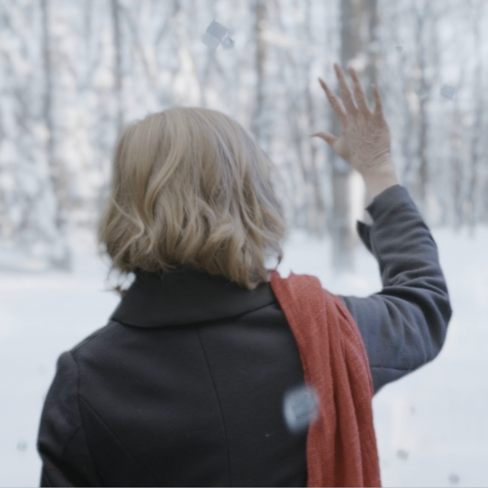
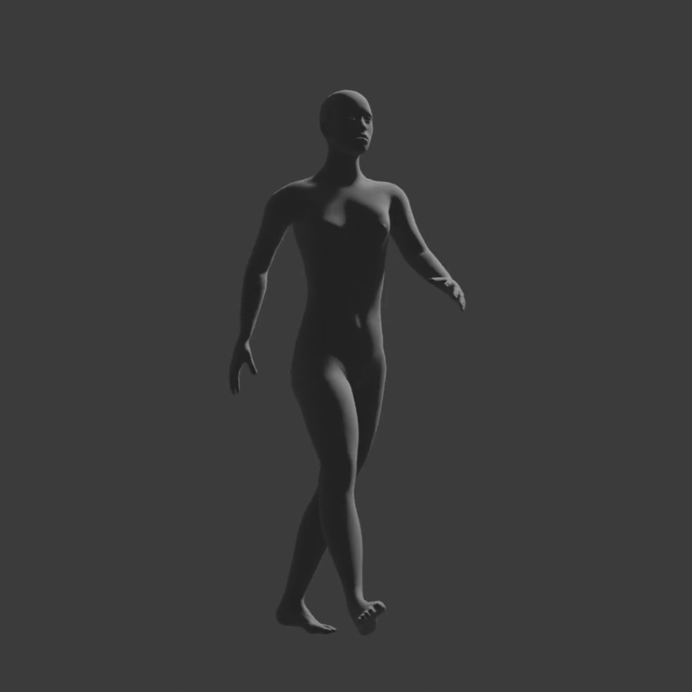
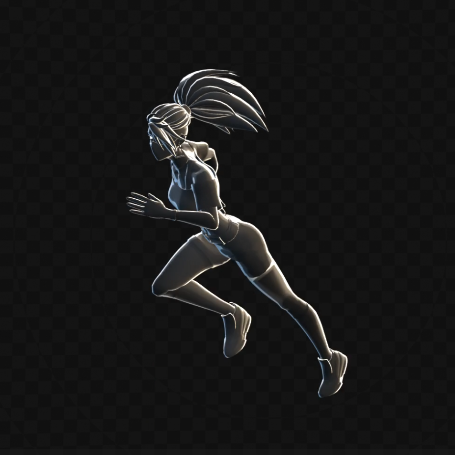
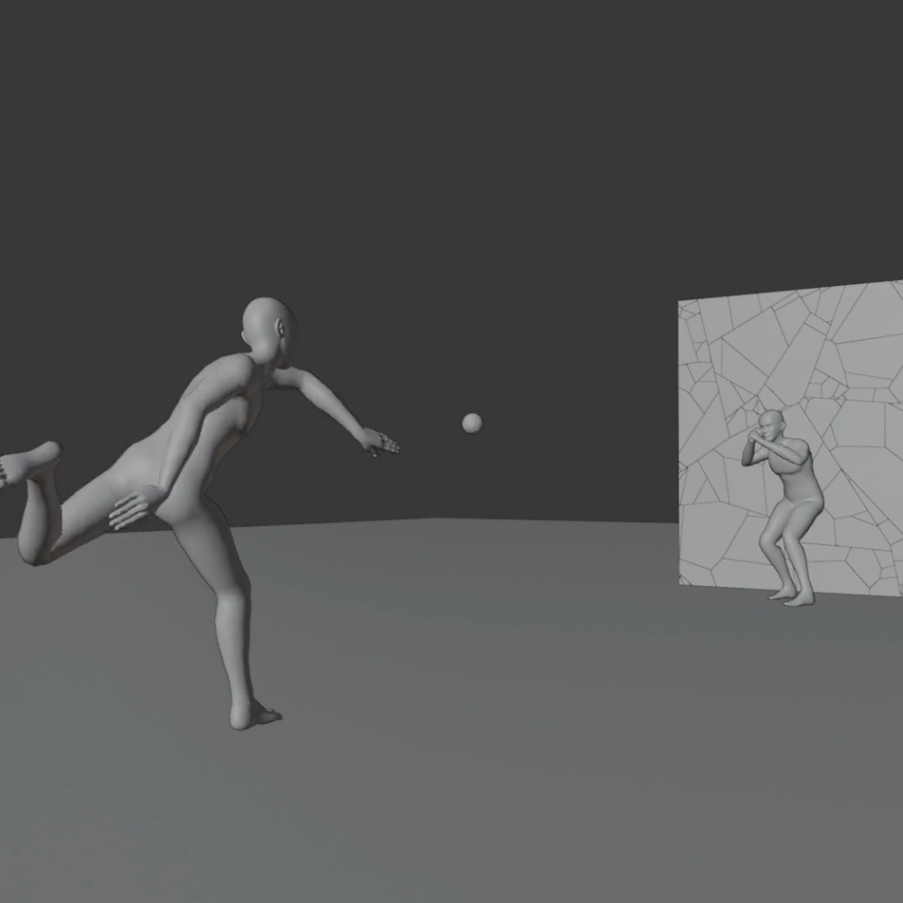
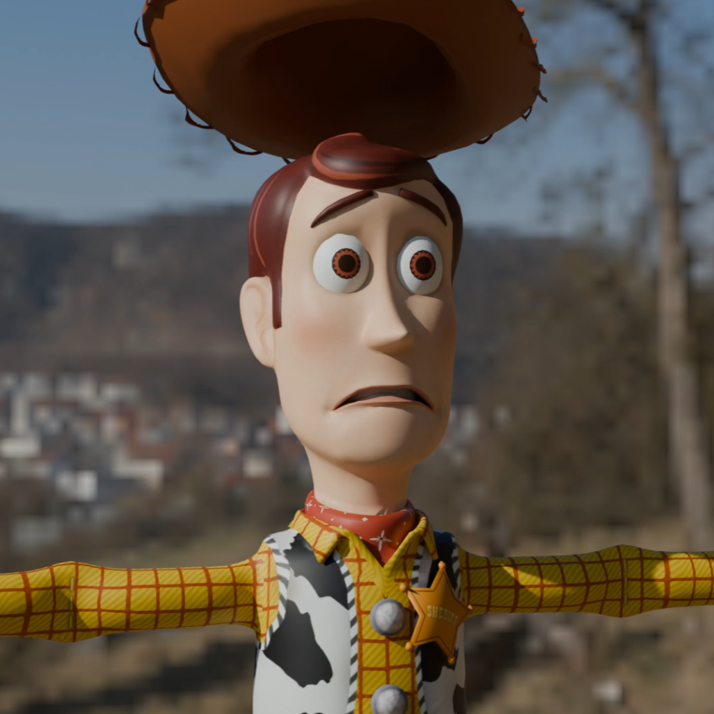
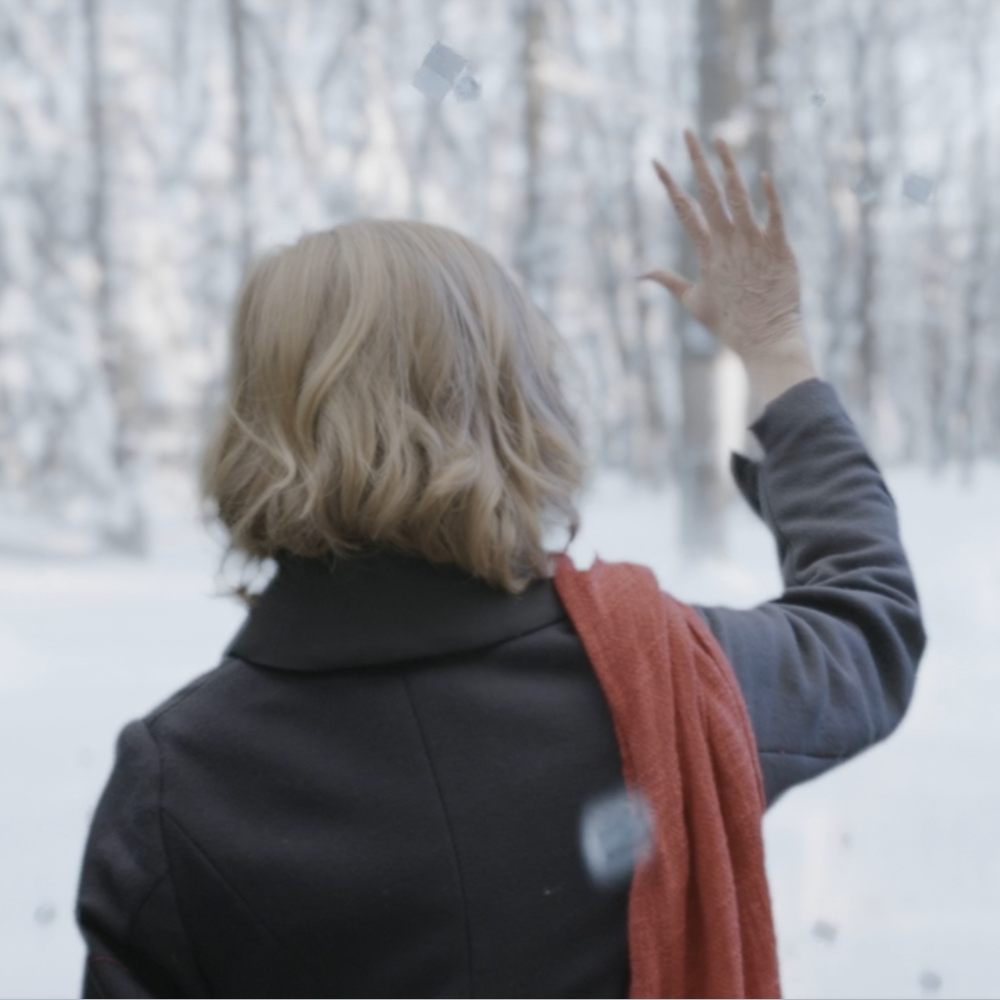
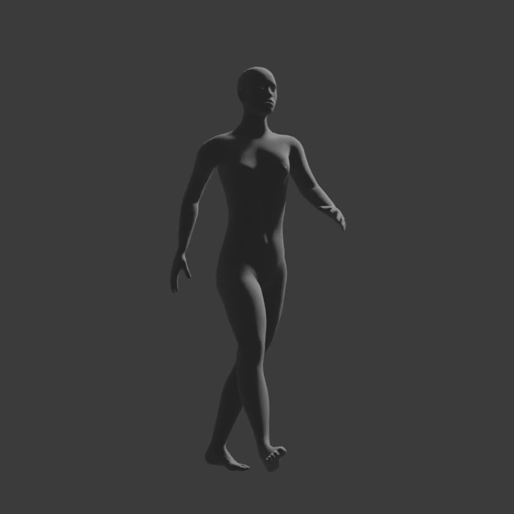
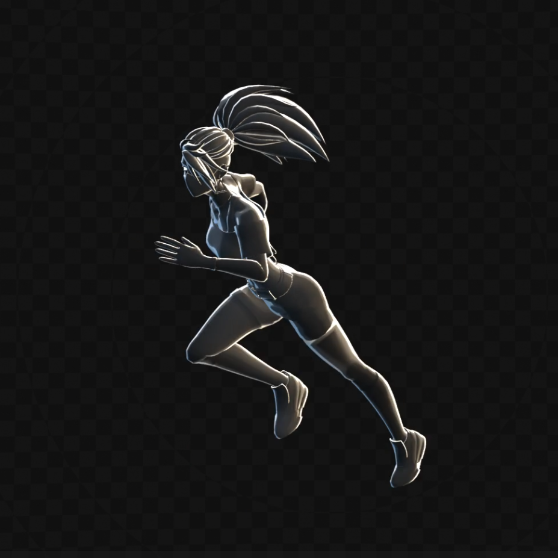
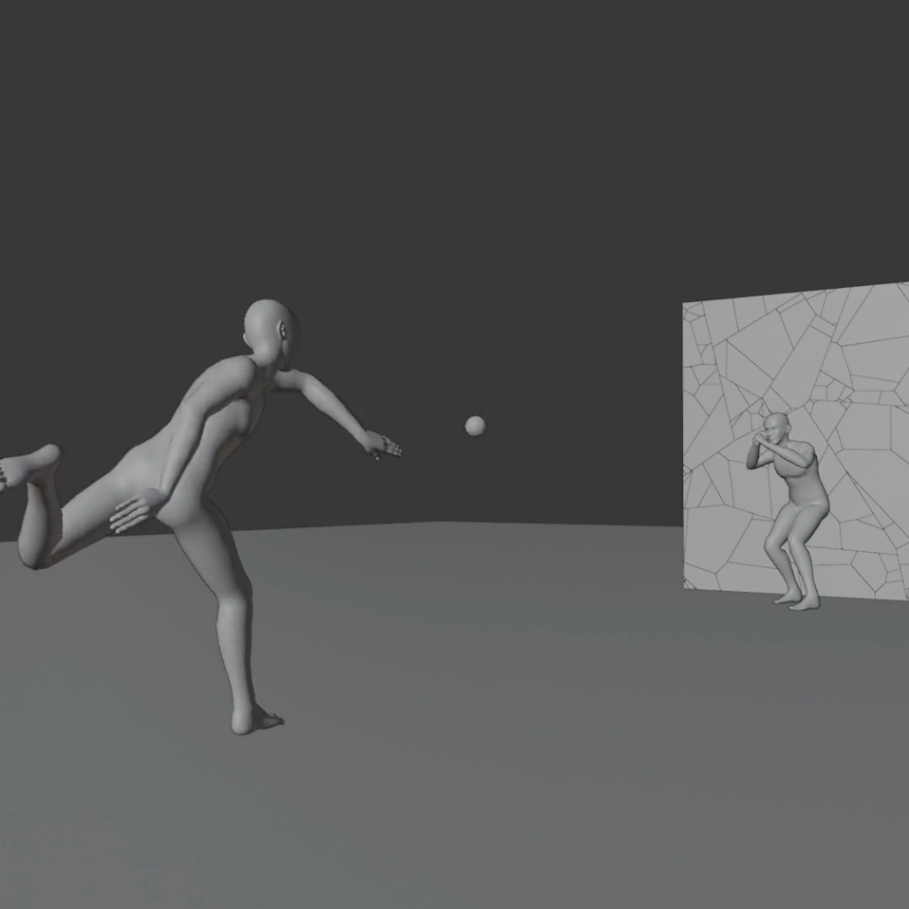
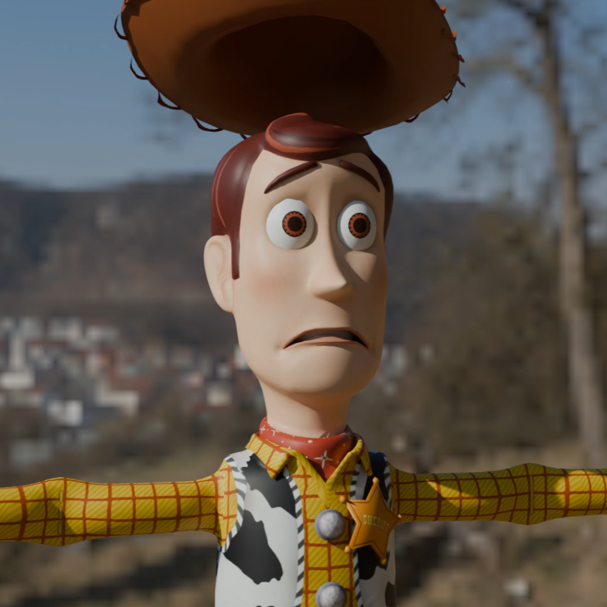

My Projects
Meeting Booking Website
A full-stack web application that allows users to register and login, as well as create, book, modify, and cancel meetings. Built with PHP, SQL, JavaScript, HTML, CSS and deployed using XAMPP, it features a responsive front-end design adapted for any screen size. Try out the website by clicking below!
Game-Playing AI
An AI agent that plays the game of Reversi (Othello) using an Iterative-Deepening Alpha-Beta Pruning tree search – coded in Python. Features an evaluation function, based on a weighted sum of heuristic values. Implementation of a genetic algorithm to optimize the weights. Usage of pre-move ordering and pruning of the search space, as well as state memoization, to avoid redundant computations and maximize efficiency. Placed 7th out of 150 in the tournament, with more than 99% win rate against real human players! See the report for more details on the agent.
2D Unity Game
A self-taught project to build a 2D platformer using Unity and C#. Includes character movement, combat, enemies, traps, animations, sound effects, and multiple game states (pause, game over, victory). Try out the game by clicking below!

 










Blender Projects
A selection of my creations in Blender. Scroll the carousel to the right to see all of my projects, and click any thumbnail to see a larger preview and the description of the project. Once open, you can click the preview image to see it in full screen!